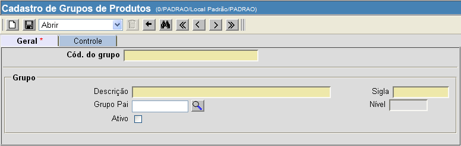

Grupos de Produtos [ Voltar ]Utilize este formulário para cadastrar e editar grupos de produtos.O formulário "Grupos de produtos" encontra-se dentro do menu "Cadastros".
Após clicar no nome do formulário, o sistema abrirá a seguinte tela: 
1º Passo: informe os dados do grupo de produtos que deseja cadastrar. Os campos em amarelo são obrigatórios.
Importante: para
desativar um grupo, é necessário que todos os seus subgrupos estejam
também desativados. Para desativar um grupo, clique na opção
"Ativo" e, em seguida, salve o registro.
Observação:
ao abrir um grupo existente, na parte inferior da tela são exibidos os
outros grupos (principal e subgrupos) a ele associados.
2° Passo: clique no botão  para
salvar o grupo de produtos. para
salvar o grupo de produtos. |